蓝哥 picks · 6/9
别再急着买API, 用 CLIProxyAPI 盘活你的 AI 订阅
@0xlangeai · 蓝哥AI · Sat Oct 03 02:43:04 +0000 2026
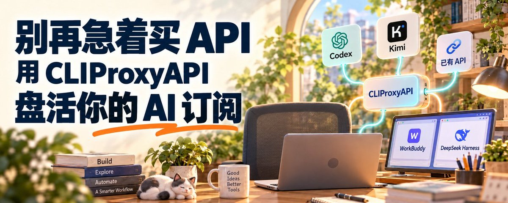
AI 订阅买了几个，工具也越用越多。真正麻烦的是：手里的模型资源，到了另一个工具、另一台机器，未必能直接接着用。
有的要 API (a way for programs to talk to each other) Key，有的要单独登录，配置还散在不同地方。资源已经有了，接入却还得反复折腾。
就比如我在本地、服务器和 Grok Bot (xAI's AI assistant that comes with its own computer) 的云端环境里用 Hermes、DeepSeek Harness。通过 CLIProxyAPI 利用已有认证把这些地方接通，对我最直接的价值，是少做重复授权，少维护几套接入配置。
这才是“盘活订阅”：不只是考虑少买一份 API，更是让已有资源接进自己想用的工具。
下面选 Codex 为例：先用图形界面接好账号和 WorkBuddy；有服务器需求再看 Docker 部署，随后单独讲 DeepSeek Harness 接入，最后介绍多工具、多环境的复用思路。
一、CLIProxyAPI 做的，是中间那层连接
工具和模型，不一定要绑在一起选。
你可以喜欢 WorkBuddy 的操作方式，也想在里面调用 GPT；可以用 DeepSeek Harness 做任务，但不局限于 DeepSeek 模型。CLIProxyAPI 的作用，就是把受支持的账号入口或已有 API，转换成应用可以调用的兼容接口。
它负责接口适配、账号管理、模型映射和请求调度。EasyCLIProxyAPI 则是图形化的桌面管理工具，帮你启动内核、授权账号和配置应用。
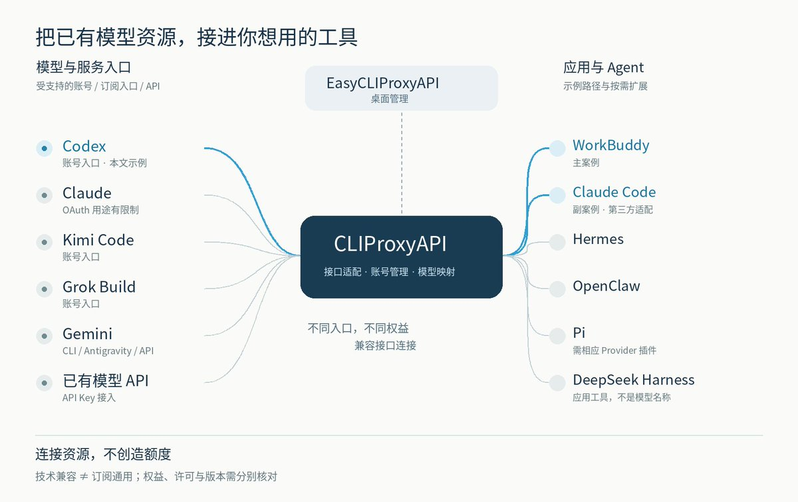
图的一边是资源，另一边是应用，中间是代理。代理在本机，不代表模型也在本机；请求仍由上游处理。
这里不能把“订了会员”理解成“拥有全部 API 权益”。Codex、Claude、Kimi、Grok、Gemini 的入口和许可各不相同；Gemini 网页会员不等于 Gemini CLI、Antigravity 或 API 的全部额度 (quota (how much use your plan allows))，Claude 订阅 OAuth (a safe sign-in that gives an app access without sharing your password) 也有用途限制。
二、先用图形界面上手：推荐 EasyCLIProxyAPI
如果是在自己的电脑上用，我建议先选 EasyCLIProxyAPI。不用一开始就处理终端命令，先把账号接好、模型调通，后面再考虑服务器和多环境。
去 官方发行页 下载对应系统、架构的安装包。
打开软件，在首页点击 “启动” , 选择新手模式 .
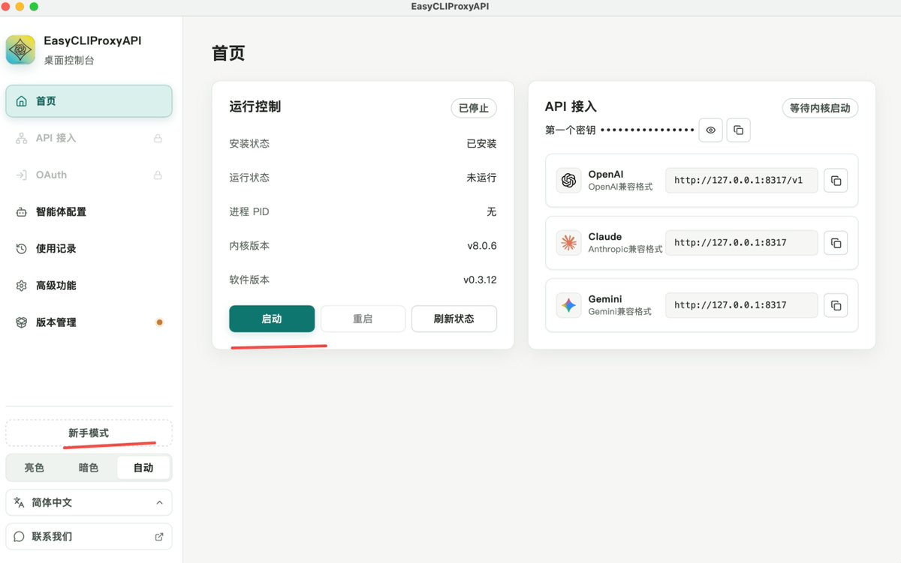
新手模式第一步接入模型, 选择要登陆的订阅 OAuth 认证或者是 API
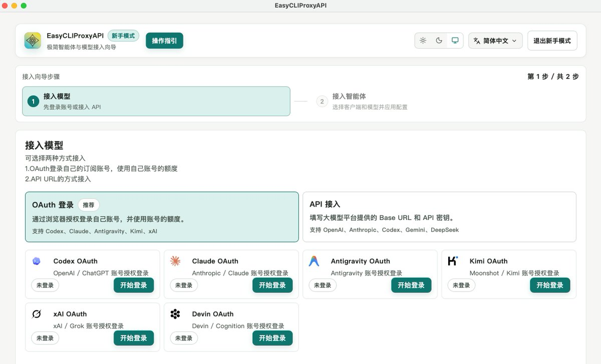
接下来，进入 OAuth 页面，选择 Codex OAuth，在浏览器里用自己的 ChatGPT 账号完成授权。回到桌面端检查账号状态和可用模型.
新手模式第二步接入智能体 (agent (an AI that acts on its own)), 选择客户端和模型并应用配置
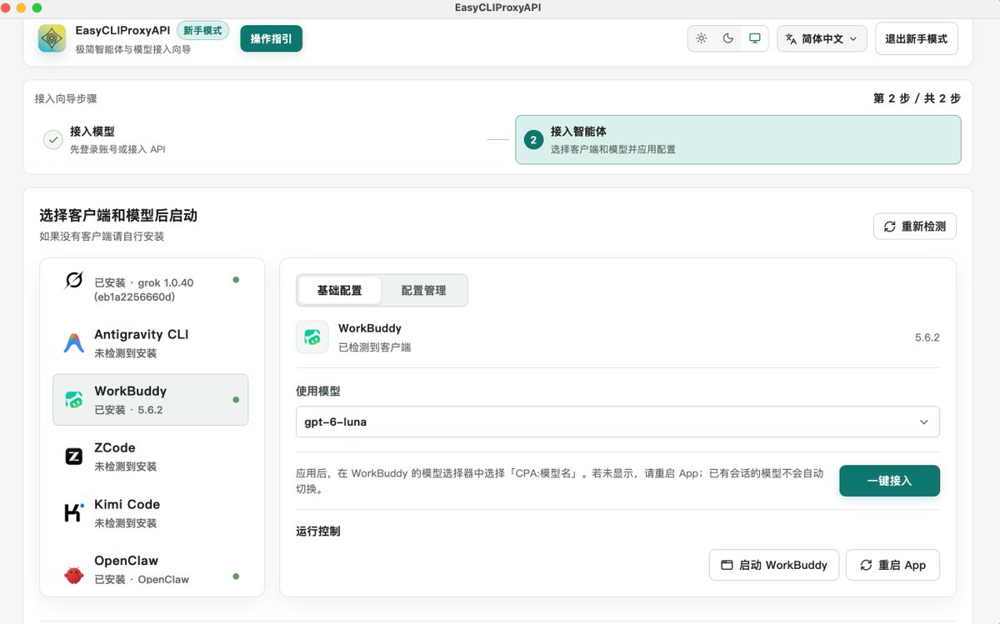
点击 “一键接入” 后, 在 workbuddy 中就能看到这个模型了
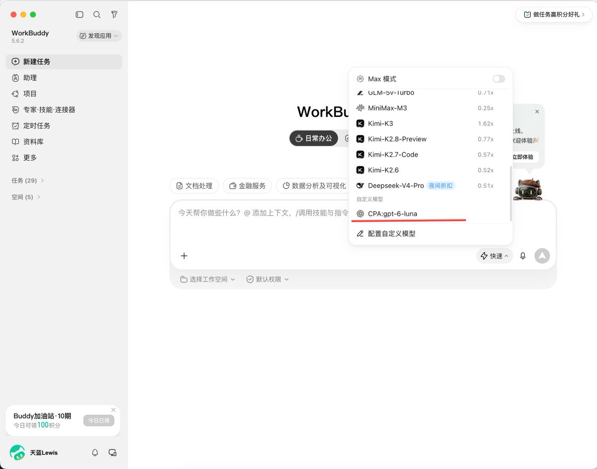
这样就能在 workbuddy 中用上 GPT 模型了
三、服务器上用 Docker：拉镜像、配置、启动 (无服务器需求, 可跳过)
电脑上先用图形界面；如果要把代理放到服务器上，我推荐 Docker，二进制也可以。服务器已安装 Docker 后，按“拉镜像→准备配置→启动容器”操作，认证文件使用你已有的受支持凭据。
第一步：拉取镜像。
MARKDOWN block
第二步：准备配置。 在服务器上创建 config.yaml；已有配置先备份。下面是 v8 的最小示例，镜像版本与配置格式要对应，也可参考 官方配置模板。
MARKDOWN block
server.host 是容器内监听地址；安全边界由启动命令中的宿主机回环端口绑定配合鉴权控制。access.api-keys 是给应用使用的代理调用 Key，不是官方 API Key。oauth.auth-dir 填容器内认证路径，与下面的挂载目标一致；对应的服务器目录放受支持、仍有效的认证文件。此示例关闭管理 API，不影响应用调用，但配置文件本身不会替你完成账号授权。
第三步：启动容器。 把三处 /path/to/your/… 换成服务器上的真实绝对路径；config.yaml 必须是已存在的文件，认证与插件路径是目录。
MARKDOWN block
上面的启动命令沿用官方镜像与挂载路径，并增加后台运行和重启策略；宿主机只开放回环端口。 修改 config.yaml 后，执行 docker restart cli-proxy-api，让容器重新加载配置。
配置和认证文件保留在容器外，供这个实例持续使用。要让本地电脑或其他云端环境接入，再通过私有网络或安全转发连接，客户端填写实际可达的地址，不直接开放公网端口。

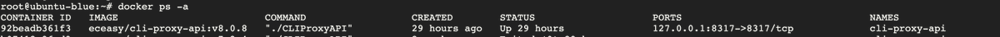
四、案例一：DeepSeek Harness 接入已有模型入口
已安装就打开；首次尝试先安装 Node.js，在测试工作目录运行：
MARKDOWN block
默认 Web 界面在 http://127.0.0.1:3080。目前项目是开发预览，菜单可能随版本变化，操作时记录版本。
打开 Settings → Models → Add model provider，选择 Custom model API。不要把代理 Key 填到默认 DeepSeek 的官方 API 配置里。
同机代理示例：
- Provider ID：cpa。
- Display name：CLIProxyAPI。
- Base URL：http://127.0.0.1:8317/v1。
- API protocol：OpenAI Chat Completions。
- Credential／API Key：你的代理调用 Key。
- Model：代理列表里实际可用的 Codex 来源模型 ID。
在 Model catalog 点 Fetch available models，选择需要的模型、Add selected，最后保存。无法自动发现时，可手动填写模型 ID。
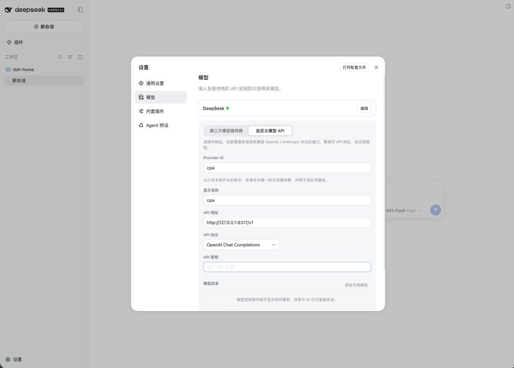
回到会话，选择模型和一个空的测试工作目录，新建会话。无需准备资料文件，直接输入下面这段任务：
MARKDOWN block
打开真实文件检查内容，再核对对应代理请求。模型能出现在列表里，不等于文件读写和工具调用已通过；已有会话也可能保留原来的模型。
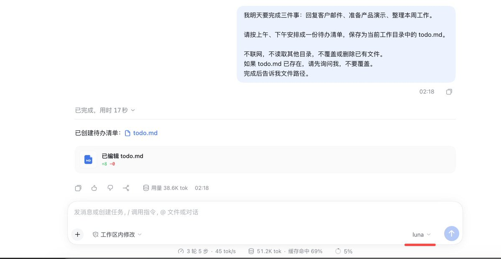
五、案例二：多个工具、多个环境，怎么少折腾
一个工具、一个账号，直接登录可能最方便。工具和环境增加后，你维护的就不只是模型，而是一堆分散的接入配置。
我的资源是 Codex、Grok Heavy、Kimi 的订阅；本地用 Hermes 和 DeepSeek Harness，自己的云服务器上有 Hermes，Grok Bot 自带的云端环境里也有 DeepSeek Harness。
利用已有的认证凭证文件，通过 CLIProxyAPI 打通这些接入。订阅还是那些订阅，但新增一个工具时，尽量不用重新处理全部上游。 这里说的是我的接入和维护体验，不代表所有套餐模型都能在每处调用。
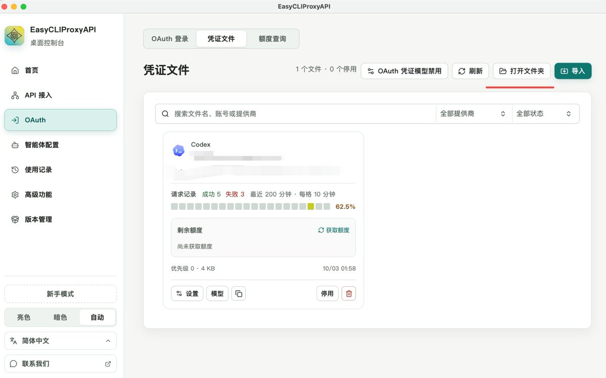
获取订阅凭证文件, 让 Agent (an AI that takes steps on its own to finish a task) 读取凭证, 做好接入, 就能用上了
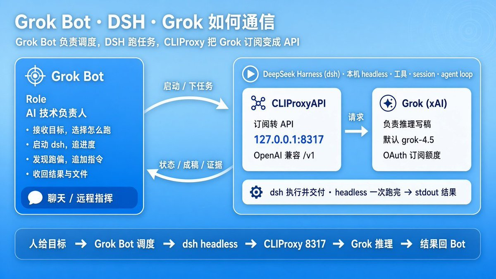
上图是 Grok Bot 服务器上用上通过 CliProxyAPI 用上 Deepseek Harness 的拆解图
同样 Hermes 接到 CLIProxyAPI，也能实现多个 Agent、脚本、CLI 共用一个内部接口，从这一层管理模型。
不必照搬一套复杂架构。可以把“模型资源怎么接入”和“应用在哪运行”分开考虑，按实际权限与网络组织连接。能直连且没有复用需求的工具，继续直连也没问题。
六、还能延伸到哪些用途？
理解这条连接关系后，还可以按需研究：
- 聊天、资料整理：接进 Cherry Studio 等客户端。
- 字幕翻译与校验：社区有调用兼容接口处理 SRT 字幕的项目。
- 工作流 (workflow (a chain of steps done in order))自动化：n8n 用户讨论过通过自定义 Base URL 接入代理。
- 其他 Agent：Hermes、OpenClaw、Pi、OpenCode 等使用自己的接入方式。原生登录已满足需求，就不必额外加代理。
这些是延伸方向，不是所有组合都已验证，更不是一次接满所有资源的清单。
七、先跑通，再扩大使用
代理不创造额度，也不会把订阅变成官方 API 余额。套餐权益、服务条款和技术兼容要分别看，不能把个人接入经验直接推广成共享或转售。
认证文件与调用 Key 妥善保管，不提交到公开仓库；多工具共用仍受额度和限流影响。应用自身的功能费用，也不因为换了模型入口就消失。
出问题先查服务、地址、鉴权和模型 ID；聊天能用但任务失败，再查工具权限与协议兼容，不要先关闭权限保护。
先让一个入口、一项任务跑通，再考虑更多工具和环境。
换工具，不一定要重新买一套模型资源。先把手里已有的用明白，再决定下一笔钱花在哪里。
参考资料
项目文档用于核对配置；社区案例用于参考思路，不代表所有套餐或版本均可复现。
- CLIProxyAPI 项目：功能与支持入口
- EasyCLIProxyAPI：桌面上手与应用配置
- CLIProxyAPI 官方 Docker 运行说明
- CLIProxyAPI v8 配置模板（v8.0.11）
- DeepSeek Harness：模型与自定义接口配置
- 社区案例：Hermes 与 CLIProxyAPI 的多工具接入思路
- 延伸案例：SRT 字幕翻译与校验
- 社区讨论：n8n 自定义模型入口